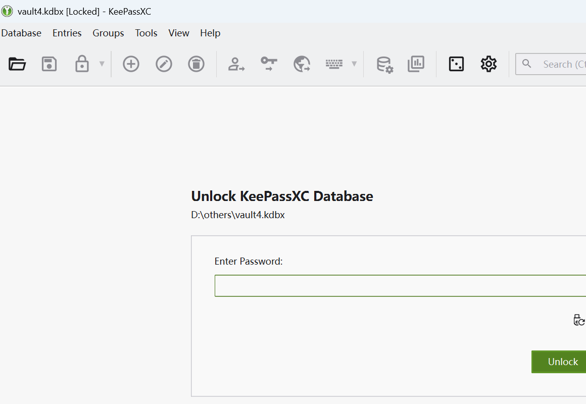
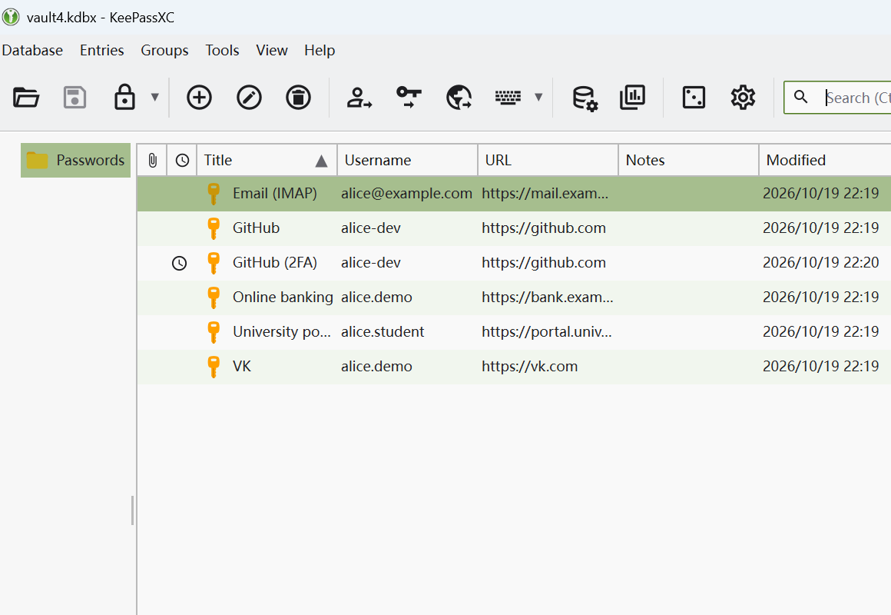
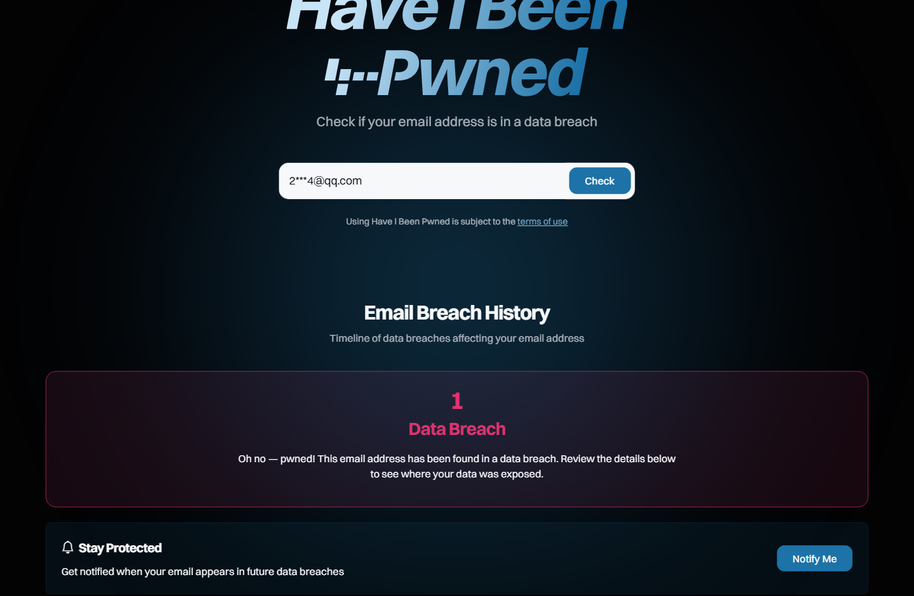
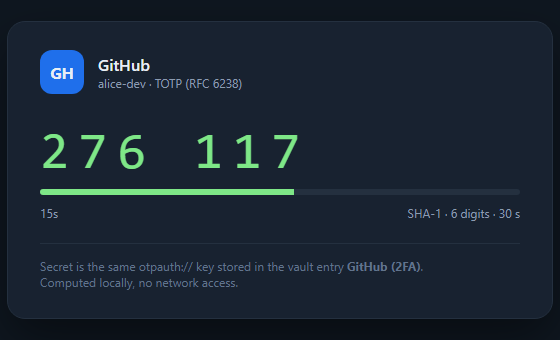

| Name | Zhang San |
| Student ID | 12345678 |
| Variant | 1 |
| Date | 2026-10-19 |
A complete self-audit of personal account security: understand why weak and reused passwords are the most common entry point, learn to use a password manager, a breach check and two-factor authentication (2FA) correctly, and turn the findings into practical digital-hygiene rules.
2***4@qq.com); the vault entries in sections 2–5 are demo data used to show the analysis
structure and the reporting format.A free, offline password manager — KeePassXC, portable build, no account required — was used to create the vault. The master password is built from random words plus digits and symbols, is at least 20 characters long, exists only in memory, is never written to a file and is not reused anywhere. Every account has its own randomly generated password, and the database file itself is AES-256 encrypted.

vault4.kdbx, AES-256)
GitHub (2FA), carries the clock icon, meaning TOTP is configured| Account type | Length | Character classes | Verdict |
|---|---|---|---|
| 8–10 | lowercase + digits | Weak: crackable offline, and reused on other sites | |
| Social (VK / Telegram) | 10–12 | upper/lower + digits | Medium: no symbols, appeared in a breach |
| University portal | 8 | digits only | Very weak: a dictionary plus rules cracks it |
| Shopping / payment | 12 | upper/lower + digits + symbols | Acceptable, but still reused |
| Developer (GitHub etc.) | 14 | random | Strong: generated by the manager |
Illustrative self-audit table; replace with your own assessment when submitting.
Only the email address was submitted to haveibeenpwned.com — never a password. The real result (the address is masked in the screenshot):

The vault entry GitHub (2FA) was configured with TOTP: the entry stores an otpauth:// secret,
and a one-time code is derived from it and the current time (RFC 6238, SHA-1, 6 digits, 30-second period).
Even if the password leaks, an attacker without the second factor cannot log in; recovery codes are kept offline so
a lost device does not lock the account.
The figure below is the TOTP generator for the same secret; its code matched
keepassxc-cli show -t at the same instant (both showed 598 298), which confirms the
configuration is correct.

GitHub (2FA) entry)Open your own profile in a private window and check item by item what a stranger can see:
| Dimension | Risky information visible to strangers | Recommended action |
|---|---|---|
| Basic profile | real name, photo, city, school, birthday | hide birthday and school; avoid reverse-searchable photos |
| Contact details | phone/email discoverable via "find me by phone number" | disable phone/email search |
| Posts and location | geo-tagged check-ins, regular venues | set past posts to friends-only, disable precise location |
| Friend list | enables social engineering (posing as a classmate/colleague) | make the friend list visible to yourself only |
06-social-audit.png) must be captured by the account owner in a private window.
This repository is public, so it is left out here to avoid publishing a real name or photo; add it before submission.Which passwords were weak? Anything shorter than 12 characters, using one character class, or reused across sites; in this audit the university portal and email passwords fall into that group. The email address itself did appear in a public breach (section 4); although that breach contains no password field, the combination of name and phone is enough for targeted phishing — which is exactly why password strength alone is not enough and 2FA plus caution must be layered on top.
What is 2FA? A second requirement on top of "something you know" (the password): "something you have" (a TOTP device, a hardware key) or "something you are". Even a leaked password is useless without the second factor. TOTP derives a 6-digit code from a shared secret and the current time; it works offline and does not depend on the mobile network.
Personal accounts are rarely lost to an advanced attacker; they are lost to weak, reused passwords and credential stuffing with already-leaked data. A password manager turns "remember many strong passwords" into "remember one", and 2FA decouples "the password leaked" from "the account is lost". Digital hygiene is about turning these actions into habits and periodic checks.